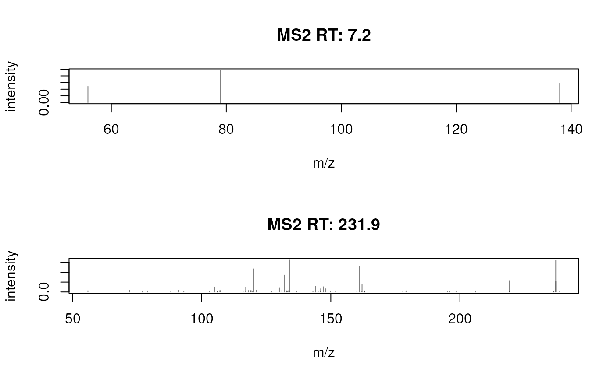
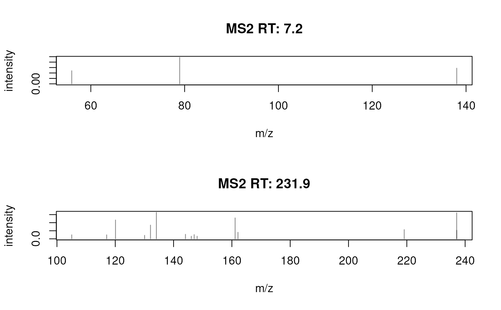
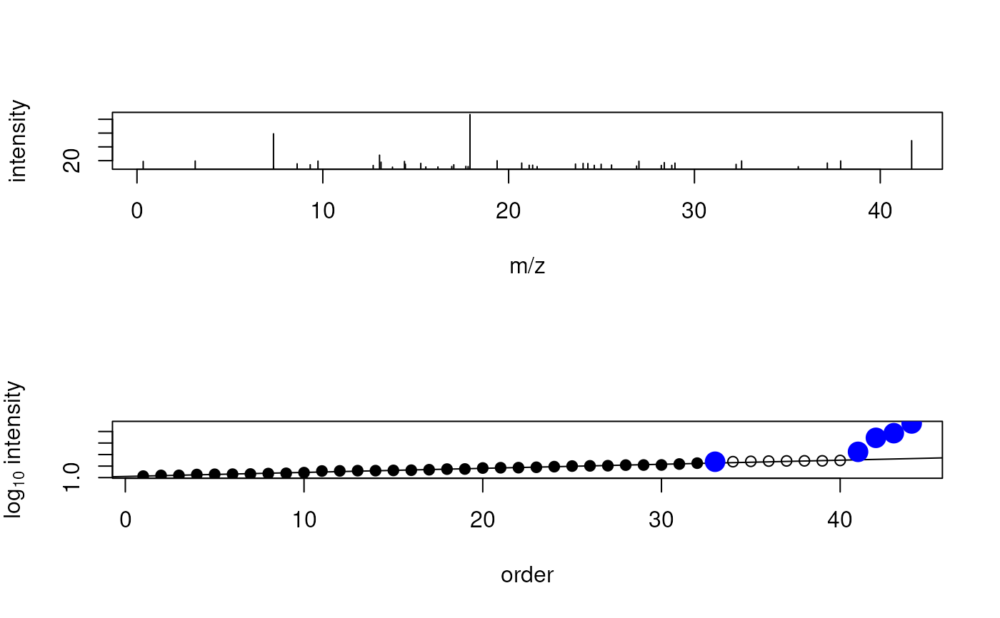
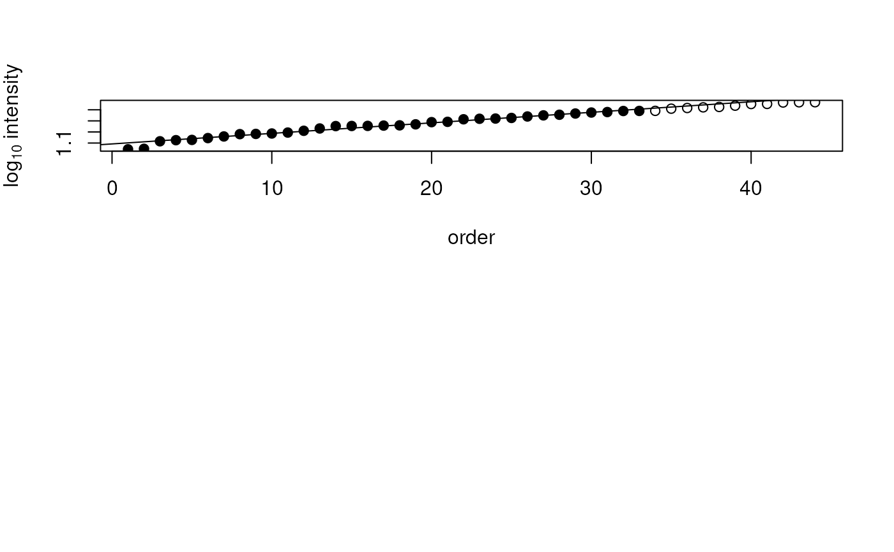

The filterNoisePeaks() cleans spectra removing noise peaks. The method
to identify noise peaks can be selected with the method parameter. The
currently supported method is:
method = "uniform_intensity": this approach assumes the intensity of noise peaks (e.g. due to electronic noise) to follow a uniform distribution while real fragment peaks having larger intensities deviating from this background distribution (Dalla Valle 2025). This method estimates noise and filters peaks using only the intensity values of a spectrum. The method was developed and tested for fragment spectra and might not be directly applicable to MS1 data. See also the details section for more information. The noise filter is only applied to spectra with an MS level matching parametermsLevel., a minimum number of peaks ofminPeakCount, if at least 4 peaks are available to fit the background model, and at least one peak passes the filter. In all other cases the spectrum is returned unfiltered.
Usage
filterNoisePeaks(
object,
method = c("uniform_intensity"),
minPeakCount = 30L,
intensityQuantile = 0.75,
msLevel. = 2L,
...
)Arguments
- object
A
Spectraobject.- method
character(1)with the noise filtering method. Currently onlymethod = "uniform_intensity"(the default) is supported.- minPeakCount
integer(1)with the minimal required number of peaks of a spectrum to apply the filter.- intensityQuantile
numeric(1)defining the intensity quantile below which peak intensities are used to model noise (defaults tointensityQuantile = 0.75).- msLevel.
integer(1)defining the MS level of the spectra which should be filtered. Defaults tomsLevel. = 2L.- ...
Ignored.
Value
A Spectra object with filtered/cleaned spectra. For
method = "uniform_intensity" the filter is only applied to spectra if:
the MS level of a spectrum matches parameter
msLevel.a spectrum has at least
minPeakCountpeaksat least 4 data points (peaks) are available to fit the background model
at least one peak passes the filter
The original, unfiltered spectrum is returned otherwise.
Details
For method = "uniform_intensity": the method fits (robustly) a linear
model explaining the peak intensity by the rank of the peak (in the
intensity-ordered peak list) for peaks with an intensity below the
intensityQuantile intensity quantile. Peaks are retained if their
measured intensity is considerably larger than the expected intensity
following the background distribution (i.e., larger than 3 times the
standard deviation of the noise model residuals). True fragment peaks are
thus required to have intensities larger than expected from the (uniform)
background distribution. See examples below for a graphical illustration
of the approach.
The implementation of this method based on the original function from (Dalla Valle 2025). Source code available here
References
Nicola Dalla Valle, Mar Garcia-Aloy, Peter Robatscher, Pietro Franceschi, Michael Oberhuber; Improving Spectral Similarity and Molecular Network Reliability through Noise Signal Filtering in MS/MS Spectra. Anal. Chem. 29 July 2025; 97 (29): 15873–15882. https://doi.org/10.1021/acs.analchem.5c02109
Examples
## Load an example data set with DDA MS2 spectra
library(MsDataHub)
s <- Spectra(MsDataHub::PestMix1_DDA.mzML()) |>
filterMsLevel(2L)
#> see ?MsDataHub and browseVignettes('MsDataHub') for documentation
#> loading from cache
## Select two example MS2 spectra.
s <- s[c(1, 271)]
res <- filterNoisePeaks(s)
## The spectra **before** filtering
plotSpectra(s)

## The spectra **after** filtering
plotSpectra(res)

## Only the second spectrum, with a large number of (presumably noise) peaks
## was filtered.
########
## Step-wise explanation of the *uniform_intensity* approach
library(MASS)
set.seed(123)
## Create an example spectrum with 40 peaks with intensities following a
## uniform distribution and 4 peaks with higher intensities. m/z values
## are random.
x <- cbind(
mz = abs(rnorm(44, mean = 20, sd = 10)),
intensity = c(runif(40, min = 10, max = 20), 28, 87, 59, 49))
## Plot the example spectrum
plot(x[, "mz"], x[, "intensity"], type = "h",
xlab = "m/z", ylab = "intensity")
## The individual steps of the *uniform_intensity* cleaning approach:
i <- log10(x[, "intensity"])
## - identify the peaks potentially representing noise peaks:
n <- which(i < quantile(i, 0.75))
o <- rank(i)
## - fit a (robust) model explaining intensity by intensity rank
m <- rlm(y ~ x, list(x = o[n], y = i[n]))
## - predict intensity values based on this background model
p <- predict(m, list(x = o, y = i))
## - select the peaks to keep: intensity more than 3 sd higher than expected
keep <- (i - p) > sd(residuals(m)) * 3
sum(keep)
#> [1] 5
## Visualizing the data and filtering:
## - plot the intensities by their rank
plot(o, i, xlab = "order", ylab = expression(log[10]~intensity))
## - highlight the points on which the background model if fitted
points(o[n], i[n], pch = 16)
## - indicate the background model
abline(m)
## - label the peaks to keep (above background noise)
points(o[keep], i[keep], pch = 16, col = "blue", cex = 2)

## Repeating for a spectrum with only intensities from a uniform distribution
x <- cbind(
mz = abs(rnorm(44, mean = 20, sd = 10)),
intensity = c(runif(44, min = 10, max = 30)))
i <- log10(x[, "intensity"])
n <- which(i < quantile(i, 0.75))
o <- rank(i)
m <- rlm(y ~ x, list(x = o[n], y = i[n]))
p <- predict(m, list(x = o, y = i))
keep <- (i - p) > sd(residuals(m)) * 3
sum(keep)
#> [1] 0
plot(o, i, xlab = "order", ylab = expression(log[10]~intensity))
points(o[n], i[n], pch = 16)
abline(m)
points(o[keep], i[keep], pch = 16, col = "blue", cex = 2)
